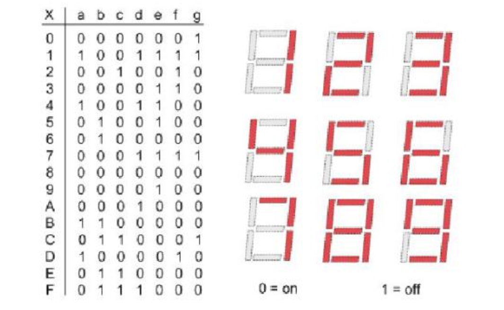

实验纪实与代码分析
1 2-to-1 Multiplexer
我们首先以一种特别的角度看与门：与的运算的作用之一就是屏蔽 ，当某个输入的值为零时，与的输出就是零，不管另一个输入是什么。这就使得我想要的数据都未被屏蔽，不想要的都被屏蔽为0。比如对于运算\(A\land S\) ，\(S\) 可以看作一个选择子，当\(S=T\) 的时候，输出就是\(A\) ，不论\(A\) 的真值为多少，输出的值就是\(A\) 的值；当\(S=F\) 的时候，输出就是\(F\) ，这时候\(A\) 就被屏蔽 了。
二路选择器的逻辑就是“屏蔽”，对于下面的二路选择器，最重要的结构就是上下两个与门 和中间一个非门 ，选择信号\(S\) 分成两份，通过非门变成两个不同的信号，分别接向两个与门，如果\(S\) 的信号为\(1\) /\(T\) ，那么就将下面的门屏蔽，输出上边的门信号；反之亦然。
结构化描述 数据流描述 行为描述
这里边利用了Verilog内置的一些门，比如AND和OR门。这种描述方式的优点就是可以很好的与真实的电路相对应，但是缺点就是不够简洁，写起来很坐牢。
module Mux2to1 (
input I0 ,
input I1 ,
input S ,
output O
);
wire S0_n ;
NOT not0 ( S0_n , S );
// assign S0_n = ~S;
wire and0_s ;
wire and1_s ;
AND and0 ( and0_s , I0 , S0_n );
AND and1 ( and1_s , I1 , S );
OR or0 ( O , and0_s , and1_s );
这种描述方法充分利用了与&、或|、非~以及异或^等运算符代替了AND、OR、NOT等门的描述，使得描述更加简洁。忍不住了，直接写数组。
module Mux2to1 (
input [ 1 : 0 ] I ,
input S ,
output O
);
assign O = I [ 0 ] & ~ S | I [ 1 ] & S ;
并且这种写法还需要注意优先级的问题，Verilog的优先级是
~>
&>
|，所以这里的写法是正确的。
我们还应该知道：
一个类C的运算符其实是一个简化描述的电路 ；一个运算符的操作数是这个电路的输入；
一个运算符运算表达式的值是这个电路的输出；
运算表达式的嵌套是门电路的级联；
这种描述方法是最简洁的，但是也是最抽象的，使用了大量的高度抽象的类C语句来提升编程的灵活性：
module Mux2to1 (
input I0 ,
input I1 ,
input S ,
output O
);
assign O = S ? I1 : I0 ;
Verilog利用了C中的三目运算符来实现了二路选择器，语法是这样的exp0 ? exp1 : exp2，这里的赋值语句并不是表示如果选择子\(S\) 是\(1\) ，我就把I0和I1连上 ，实际上这就是一个二路选择器 ，exp0是构造选择子电路的输出 ，真不是不连电路啊……
if-else 必须在always块中使用，并且输出必须是reg类型。但是在always@(*)中，内部的reg被综合成wire类型
2 复合多路选择器/Cascaded Mux
多路选择器可以根据选择子从多个单bit 输入中选择单bit 输出，但是如果我们需要从多个多bit 输入中选择多bit 输出，那么就需要使用复合多路选择器。复合多路选择器在硬件实现上其实是由多个单路选择器级联而成的。
3 七段数码管译码器/Seven-Segment Decoder
七段数码管的显示译码的对应关系如下，使用复合多路选择器，就不难得到下面源码。解释源码的方法很简单，把它的接口a到g分开，当卡诺图写就好了。

index版本 与或版本
好看一点并且比较符合选择 想法的写法。
module SegDecoder_new (
input wire [ 3 : 0 ] data ,
input wire point ,
input wire LE ,
output wire a ,
output wire b ,
output wire c ,
output wire d ,
output wire e ,
output wire f ,
output wire g ,
output wire p
);
wire [ 6 : 0 ] segs [ 15 : 0 ];
assign segs [ 0 ] = 7 'b0000001 ;
assign segs [ 1 ] = 7 'b1001111 ;
assign segs [ 2 ] = 7 'b0010010 ;
assign segs [ 3 ] = 7 'b0000110 ;
assign segs [ 4 ] = 7 'b1001100 ;
assign segs [ 5 ] = 7 'b0100100 ;
assign segs [ 6 ] = 7 'b0100000 ;
assign segs [ 7 ] = 7 'b0001111 ;
assign segs [ 8 ] = 7 'b0000000 ;
assign segs [ 9 ] = 7 'b0000100 ;
assign segs [ 10 ] = 7 'b0001000 ;
assign segs [ 11 ] = 7 'b1100000 ;
assign segs [ 12 ] = 7 'b0110001 ;
assign segs [ 13 ] = 7 'b1000010 ;
assign segs [ 14 ] = 7 'b0110000 ;
assign segs [ 15 ] = 7 'b0111000 ;
assign { a , b , c , d , e , f , g } = { 7 { LE }} | segs [ data ];
assign p = ~ point ;
endmodule //SegDecoder
这个是对应的图片，非常的朴素。
module SegDecoder (
input wire [ 3 : 0 ] data ,
input wire point ,
input wire LE ,
output wire a ,
output wire b ,
output wire c ,
output wire d ,
output wire e ,
output wire f ,
output wire g ,
output wire p
);
assign a = LE | ( data [ 0 ] & data [ 1 ] & ~ data [ 2 ] & data [ 3 ] |
data [ 0 ] & ~ data [ 1 ] & data [ 2 ] & data [ 3 ] |
~ data [ 0 ] & ~ data [ 1 ] & data [ 2 ] & ~ data [ 3 ] |
data [ 0 ] & ~ data [ 1 ] & ~ data [ 2 ] & ~ data [ 3 ] );
assign b = LE | ( data [ 0 ] & data [ 1 ] & data [ 3 ] |
~ data [ 0 ] & data [ 2 ] & data [ 3 ] |
~ data [ 0 ] & data [ 1 ] & data [ 2 ] |
data [ 0 ] & ~ data [ 1 ] & data [ 2 ] & ~ data [ 3 ] );
assign c = LE | ( data [ 1 ] & data [ 2 ] & data [ 3 ] |
~ data [ 0 ] & data [ 1 ] & ~ data [ 2 ] & ~ data [ 3 ] |
~ data [ 0 ] & data [ 2 ] & data [ 3 ] );
assign d = LE | ( ~ data [ 0 ] & data [ 1 ] & ~ data [ 2 ] & data [ 3 ] |
data [ 0 ] & data [ 1 ] & data [ 2 ] |
~ data [ 0 ] & ~ data [ 1 ] & data [ 2 ] & ~ data [ 3 ] |
data [ 0 ] & ~ data [ 1 ] & ~ data [ 2 ] & ~ data [ 3 ] );
assign e = LE | ( data [ 0 ] & ~ data [ 1 ] & ~ data [ 2 ] |
~ data [ 1 ] & data [ 2 ] & ~ data [ 3 ] |
data [ 0 ] & ~ data [ 3 ] );
assign f = LE | ( data [ 0 ] & data [ 1 ] & ~ data [ 3 ] |
data [ 1 ] & ~ data [ 2 ] & ~ data [ 3 ] |
data [ 0 ] & ~ data [ 2 ] & ~ data [ 3 ] |
data [ 0 ] & ~ data [ 1 ] & data [ 2 ] & data [ 3 ] );
assign g = LE | ( ~ data [ 0 ] & ~ data [ 1 ] & data [ 2 ] & data [ 3 ] |
data [ 0 ] & data [ 1 ] & data [ 2 ] & ~ data [ 3 ] |
~ data [ 1 ] & ~ data [ 2 ] & ~ data [ 3 ] );
assign p = ~ point ;
endmodule //SegDecoder
4 全加器(Full Adder)
1-bit full adder ripple-carry adder sub-adder 4-bit lookahead adder
module Adder (
input a ,
input b ,
input c_in ,
output s ,
output c_out
);
assign s = a ^ b ^ c_in ;
assign c_out = a & b | a & c_in | b & c_in ;
endmodule
module Adders #(
parameter LENGTH = 32
)(
input [ LENGTH - 1 : 0 ] a ,
input [ LENGTH - 1 : 0 ] b ,
input c_in ,
output [ LENGTH - 1 : 0 ] s ,
output c_out
);
wire c [ LENGTH: 0 ];
assign c [ 0 ] = c_in ;
genvar i ;
generate
for ( i = 0 ; i < LENGTH ; i = i + 1 ) begin
Adder adder (. a ( a [ i ]), . b ( b [ i ]), . c_in ( c [ i ]), . s ( s [ i ]), . c_out ( c [ i + 1 ]));
end
endgenerate
assign c_out = c [ LENGTH ];
endmodule
module AddSubers #(
parameter LENGTH = 32
)(
input [ LENGTH - 1 : 0 ] a ,
input [ LENGTH - 1 : 0 ] b ,
input do_sub ,
output [ LENGTH - 1 : 0 ] s ,
output c
);
wire [ LENGTH - 1 : 0 ] res_adder ;
assign res_adder = { LENGTH { do_sub }};
wire [ LENGTH - 1 : 0 ] tmp ;
assign tmp = res_adder ^ b ;
Adders #(. LENGTH ( LENGTH )) adder_sub (. a ( a ), . b ( tmp ), . c_in ( do_sub ), . s ( s ), . c_out ( c ));
endmodule
module Lookahead_Adder4 (
input [ 3 : 0 ] a ,
input [ 3 : 0 ] b ,
input c_in ,
output [ 3 : 0 ] s ,
output c_out
);
wire [ 3 : 0 ] G ;
wire [ 3 : 0 ] P ;
wire [ 4 : 0 ] c ;
genvar i ;
generate
for ( i = 0 ; i < 4 ; i = i + 1 ) begin
assign G [ i ] = a [ i ] & b [ i ];
assign P [ i ] = a [ i ] ^ b [ i ];
end
endgenerate
assign c [ 0 ] = c_in ;
assign c [ 1 ] = G [ 0 ] | P [ 0 ] & c [ 0 ];
// assign c[2] = G[1] | P[1] & c[1];
assign c [ 2 ] = G [ 1 ] | P [ 1 ] & G [ 0 ] | P [ 1 ] & P [ 0 ] & c [ 0 ] ;
assign c [ 3 ] = G [ 2 ] | P [ 2 ] & G [ 1 ] | P [ 2 ] & P [ 1 ] & G [ 0 ] |
P [ 2 ] & P [ 1 ] & P [ 0 ] & c [ 0 ] ;
assign c [ 4 ] = G [ 3 ] | P [ 3 ] & G [ 2 ] | P [ 3 ] & P [ 2 ] & G [ 1 ] |
P [ 3 ] & P [ 2 ] & P [ 1 ] & G [ 0 ] | P [ 3 ] & P [ 2 ] & P [ 1 ] & P [ 0 ] & c [ 0 ];
assign c_out = c [ 4 ];
generate
for ( i = 0 ; i < 4 ; i = i + 1 ) begin
assign s [ i ] = P [ i ] ^ c [ i ];
end
endgenerate
endmodule
5 七段数码管驱动
6 有限状态机
说是有限状态机，其实就是完成 C 程里面一个常见的小程序，记录输入 a 的数量，当连续输入三个 a 的时候，结束程序，当输入 b 的时候，计数清零。
FSM RTFSC: ClkDiv RTFSC：Debouncer RTFSC：PosSample
module FSM (
input rstn ,
input clk ,
input a ,
input b ,
output [ 1 : 0 ] state
);
typedef enum logic [ 1 : 0 ] { st0 , st1 , st2 , st3 } fsm_state_t ;
fsm_state_t state_s ;
always @( posedge clk or negedge rstn ) begin
if ( ~ rstn )
state_s <= st0 ;
else begin
case ( state_s )
st0: begin
if ( a ) state_s <= st1 ;
else if ( b ) state_s <= st0 ;
end
st1: begin
if ( a ) state_s <= st2 ;
else if ( b ) state_s <= st0 ;
end
st2: begin
if ( a ) state_s <= st3 ;
else if ( b ) state_s <= st0 ;
end
st3: state_s <= st3 ;
endcase
end
end
assign state = state_s ;
endmodule
实现了一个分频器，将输入的时钟信号分频为 ½ 的幂的频率输出。
module ClkDiv (
input clk ,
input rstn ,
output reg [ 31 : 0 ] clk_div
);
always @( posedge clk ) begin
if ( ~ rstn ) clk_div <= 32 'b0 ;
else clk_div <= clk_div + 32 'b1 ;
end
endmodule
很简单有效的实现，clk_div[0] 每个时钟周期翻转一次，其频率是时钟频率的一半，而翻转的时候会向上产生进位，从而 clk_div[1] 的频率是 clk_div[0] 的 ½，也就是时钟频率的 ¼，后边的频率依次减半。
module Debouncer ( // repo/sys-project/lab3-1/syn/Debouncer.v
input wire clk , //100Mhz 2^10
input wire btn ,
output wire btn_dbnc
);
reg [ 7 : 0 ] shift = 0 ;
always @ ( posedge clk ) begin
shift <= { shift [ 6 : 0 ], btn };
end
assign btn_dbnc = & shift ;
endmodule
module PosSample ( // repo/sys-project/lab3-1/syn/Debouncer.v
input clk ,
input data ,
output sample
);
reg old_data ;
always @( posedge clk ) begin
old_data <= data ;
end
assign sample = ~ old_data & data ;
endmodule
7 计数器 & 定时器
Cnt ver1 Cnt_24 ver1
丑陋版，因为当初做的时候改了好多，这种形式比较好 debug，当然可能用枚举会好看一丢丢，不过好看不到哪里去。
module Cnt #(
parameter BASE = 10 ,
parameter INITIAL = 0
) (
input clk ,
input rstn ,
input low_co ,
input high_rst ,
output co ,
output reg [ 3 : 0 ] cnt
);
logic [ 3 : 0 ] state ;
reg carryFlag ;
always @( posedge clk ) begin
if ( ~ rstn ) begin
state <= { INITIAL [ 3 ], INITIAL [ 2 ], INITIAL [ 1 ], INITIAL [ 0 ]};
end else if ( high_rst ) begin
state <= 4 'b0 ;
end else if ( low_co )
case ( state )
4 'b0 : begin
state <= 4 'b1 ;
carryFlag = 0 ;
end
4 'b1 : state <= 4 'b10 ;
4 'b10 : state <= 4 'b11 ;
4 'b11 : state <= 4 'b100 ;
4 'b100 : state <= 4 'b101 ;
4 'b101 : state <= 4 'b110 ;
4 'b110 : state <= 4 'b111 ;
4 'b111 : state <= 4 'b1000 ;
4 'b1000 : begin
state <= 4 'b1001 ;
carryFlag = 0 ;
end
4 'b1001 : begin
state <= 4 'b0 ;
carryFlag = 1 ;
end
default : state <= state + 4 'b1 ;
endcase
else carryFlag = 0 ;
end
assign cnt = state ;
assign co = carryFlag ;
endmodule
还有优化的空间，但是最重要的想法在于全局使能信号 ，只有当低位有进位的时候，也就是 low_co 为 1 的时候，传给高位的信号（包括低位向高位的信号）才会有意义，否则就有可能出现乱进位的情况。
module Cnt2num #(
parameter BASE = 24 ,
parameter INITIAL = 16
)(
input clk ,
input rstn ,
input high_rst ,
input low_co ,
output co ,
output [ 7 : 0 ] cnt
);
localparam HIGH_BASE = 10 ;
localparam LOW_BASE = 10 ;
localparam HIGH_INIT = INITIAL / 10 ;
localparam LOW_INIT = INITIAL % 10 ;
localparam HIGH_CO = ( BASE - 1 ) / 10 ;
localparam LOW_CO = ( BASE - 1 ) % 10 ;
wire low_carry , low_carry_flag ;
assign low_carry = low_co & low_carry_flag ;
reg HIGH_rst , tmp ;
reg [ 7 : 0 ] ALL_CO ;
assign ALL_CO = { HIGH_CO [ 3 ], HIGH_CO [ 2 ], HIGH_CO [ 1 ], HIGH_CO [ 0 ], LOW_CO [ 3 ], LOW_CO [ 2 ], LOW_CO [ 1 ], LOW_CO [ 0 ]};
always @( posedge clk ) begin
if ( cnt == ALL_CO ) begin
HIGH_rst = 1 'b1 ;
end else begin
HIGH_rst = 1 'b0 ;
end
end
assign co = tmp | HIGH_rst ;
Cnt #(. BASE ( HIGH_BASE ), . INITIAL ( HIGH_INIT )) cnt_high (. clk ( clk ), . rstn ( rstn ), . high_rst ( HIGH_rst ), . low_co ( low_carry ), . co ( tmp ), . cnt ( cnt [ 7 : 4 ]));
Cnt #(. BASE ( LOW_BASE ), . INITIAL ( LOW_INIT )) cnt_low (. clk ( clk ), . rstn ( rstn ), . high_rst ( HIGH_rst ), . low_co ( low_co ), . co ( low_carry_flag ), . cnt ( cnt [ 3 : 0 ]));
endmodule
8 乘法器
Multipler ver1 RTFSC: judge
module Multiplier #(
parameter LEN = 32
)(
input clk ,
input rst ,
input [ LEN - 1 : 0 ] multiplicand ,
input [ LEN - 1 : 0 ] multiplier ,
input start ,
output [ LEN * 2 - 1 : 0 ] product ,
output finish
);
localparam PRODUCT_LEN = LEN * 2 ;
logic [ LEN - 1 : 0 ] multiplicand_reg ;
logic [ PRODUCT_LEN - 1 : 0 ] product_reg ;
localparam CNT_LEN = $clog2 ( LEN );
localparam CNT_NUM = LEN - 1 ;
typedef enum logic [ 1 : 0 ] { IDLE , WORK , FINAL } fsm_state ;
fsm_state fsm_state_reg ;
logic [ CNT_LEN - 1 : 0 ] work_cnt ;
logic finish_reg ;
logic start_load ;
assign product = product_reg ;
assign finish = finish_reg ;
always @( posedge clk or posedge rst ) begin
if ( rst ) begin
fsm_state_reg <= IDLE ;
end else begin
if ( start ) begin
start_load = 1 'b1 ;
end
if ( start_load ) begin
case ( fsm_state_reg )
IDLE: begin
multiplicand_reg <= multiplicand ;
product_reg [ PRODUCT_LEN - 1 : LEN ] = { LEN { 1 'b0 }};
product_reg [ LEN - 1 : 0 ] = multiplier ;
fsm_state_reg <= WORK ;
start_load = 1 'b1 ;
work_cnt <= { CNT_LEN { 1 'b0 }};
end
WORK: begin
if ( product_reg [ 0 ]) begin
product_reg [ PRODUCT_LEN - 1 : LEN ] = product_reg [ PRODUCT_LEN - 1 : LEN ] + multiplicand_reg ;
work_cnt <= work_cnt + 1 ;
product_reg = product_reg >> 1 ;
product_reg [ PRODUCT_LEN - 1 ] = ( product_reg [ PRODUCT_LEN - 2 : LEN - 1 ] < multiplicand_reg );
end else begin
product_reg = product_reg >> 1 ;
work_cnt <= work_cnt + 1 ;
end
if ( work_cnt == CNT_NUM [ CNT_LEN - 1 : 0 ]) begin
fsm_state_reg <= FINAL ;
finish_reg <= 1 'b1 ;
end
end
FINAL: begin
finish_reg <= 1 'b0 ;
start_load = 1 'b0 ;
fsm_state_reg <= IDLE ;
end
default : fsm_state_reg <= IDLE ;
endcase
end
end
end
endmodule
import " DPI - C " function int mul_judge(
input int unsigned multiplicand ,
input int unsigned multiplier ,
input longint unsigned product
);
module Judge (
input clk ,
input rstn ,
input [ 31 : 0 ] multiplicand ,
input [ 31 : 0 ] multiplier ,
input start ,
input [ 63 : 0 ] product ,
input finish ,
output reg error
);
reg [ 31 : 0 ] multiplicand_reg ;
reg [ 31 : 0 ] multiplier_reg ;
always @( posedge clk or negedge rstn ) begin
if ( ~ rstn ) begin
multiplicand_reg <= 32 'b0 ;
multiplier_reg <= 32 'b0 ;
end else if ( start ) begin
multiplicand_reg <= multiplicand ;
multiplier_reg <= multiplier ;
end
end
always @( posedge clk or negedge rstn ) begin
if ( ~ rstn ) begin
error <= 1 'b0 ;
end else begin
if ( finish ) begin
if ( mul_judge ( multiplicand , multiplier , product ) == 32 'b1 ) begin
error <= 1 'b0 ;
end else begin
error <= 1 'b1 ;
end
end
end
end
endmodule

 但是这个是老实人写法，就直接按照真值表画电路硬刚，千万别这么写，丑死了。
但是这个是老实人写法，就直接按照真值表画电路硬刚，千万别这么写，丑死了。